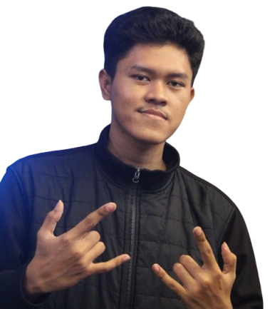

Frontend
HTML5, CSS3, JavaScript, Responsive Design, Tailwind CSS.
Halo, saya
Saya membangun website yang modern, responsif, dan berfokus pada pengalaman pengguna agar bisnis Anda terlihat profesional di dunia digital.

Available for work
Tentang Saya
Saya adalah seorang web developer yang suka merancang dan membangun solusi digital yang sederhana, cepat, dan estetis. Saya fokus pada pengembangan landing page, portfolio, hingga aplikasi web yang membantu bisnis berkembang.
Dengan pendekatan yang user-centered, saya memastikan setiap elemen desain dan kode memiliki tujuan yang jelas agar website tidak hanya bagus secara visual, tapi juga efektif dalam menyampaikan pesan.
Keahlian
HTML5, CSS3, JavaScript, Responsive Design, Tailwind CSS.
Wireframing, prototyping, visual hierarchy, user flow, design system.
Landing page, portfolio, website company profile, product showcase.
Proyek
Membangun landing page untuk brand yang ingin tampil profesional dan mudah dipercaya.
Portofolio pribadi dengan desain minimalis untuk menonjolkan karya dan pengalaman.
Desain antarmuka yang fokus pada alur penggunaan dan pengalaman pengguna yang halus.
Kontak